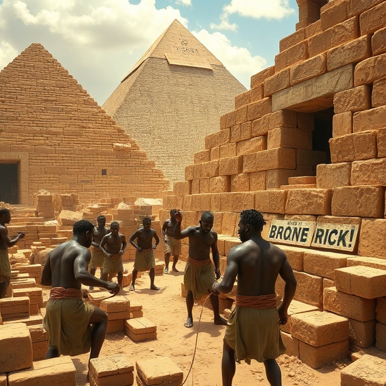
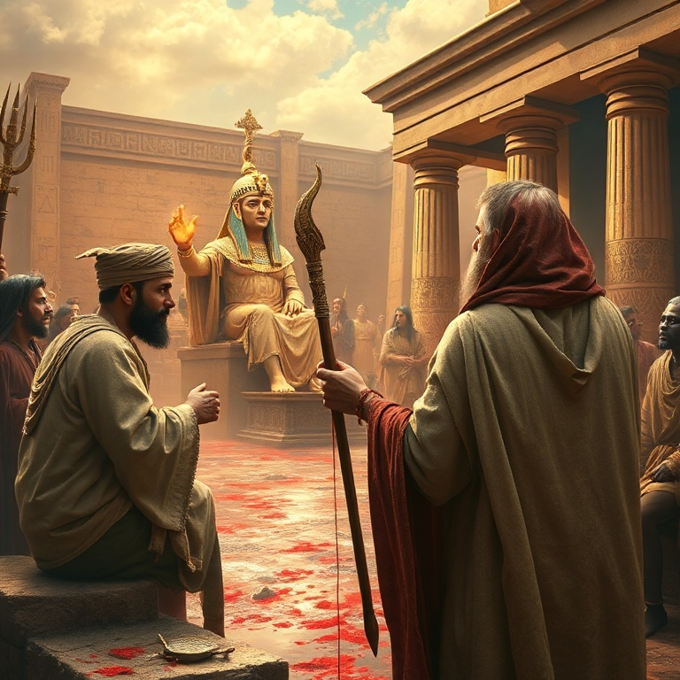
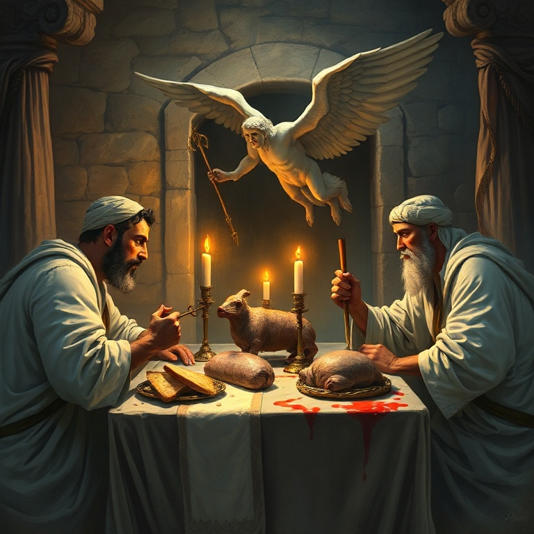
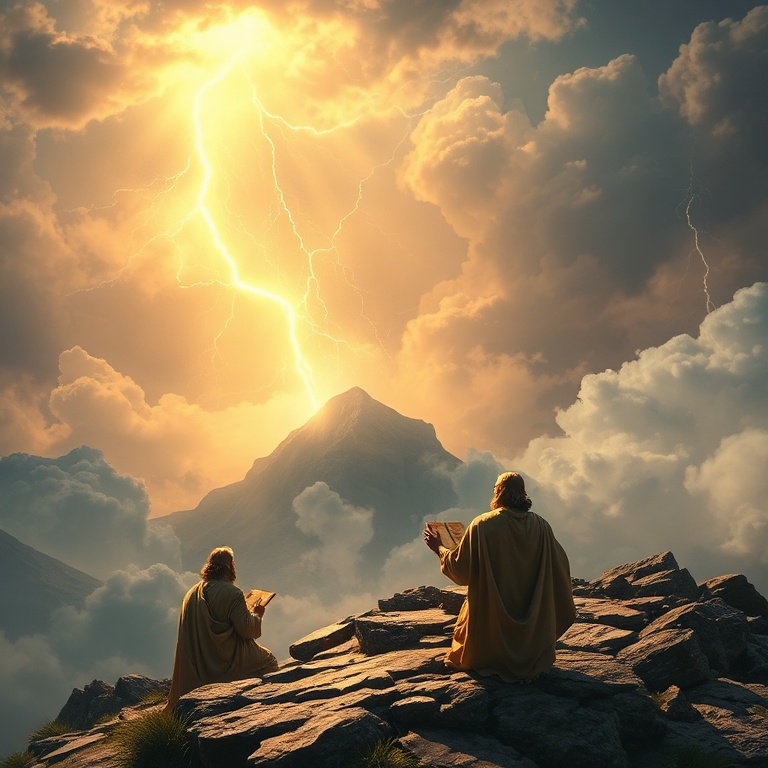
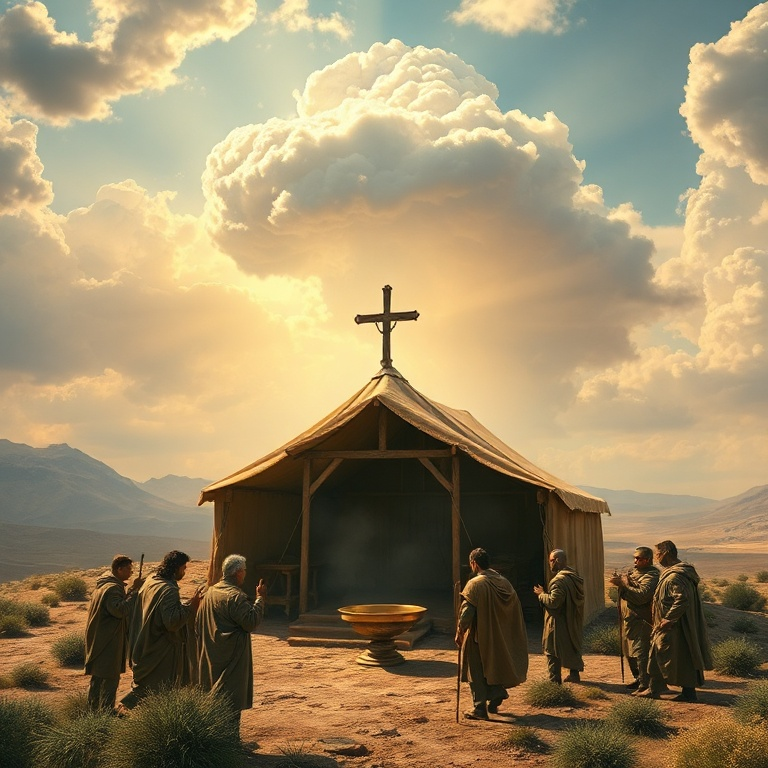

Introdução
Êxodo é o livro da libertação. Ele narra a saída do povo de Israel do Egito, onde viveram em escravidão por quatrocentos anos. Mais do que um relato histórico, Êxodo revela o caráro de Deus como libertador, provedor e legislador. O nome do livro significa "saída", e sua mensagem central é que Deus ouve o clamor do seu povo e age para salvá-lo. O livro pode ser dividido em três partes principais: a libertação do Egito, a jornada até o Sinai e o estabelecimento da aliança. Cada seção revela um aspecto diferente do relacionamento entre Deus e Israel. As pragas, a Páscoa e a travessia do mar Vermelho demonstram o poder de Deus sobre os deuses do Egito e sua fidelidade às promessas feitas aos patriarcas. Êxodo também é fundamental para a teologia bíblica porque estabelece o padrão de redenção que encontrará seu cumprimento em Cristo. Assim como Israel foi libertado da escravidão no Egito, a humanidade é libertada do pecado por meio de Jesus. A Páscoa judaica aponta para o Cordeiro de Deus, e a lei do Sinai revela a santidade que Deus requer do seu povo.
1) Escravidão no Egito

1) Escravidão no Egito
Gênesis termina com José e sua família vivendo no Egito sob a proteção de Faraó. Êxodo começa com uma mudança drástica: um novo rei se levantou no Egito que não conhecia José. Esse faraó viu o crescimento dos israelitas como uma ameaça e os submeteu à escravidão brutal. Os egípcios impuseram trabalho forçado aos israelitas e tornaram a vida amarga para eles. A opressão se intensificou quando Faraó ordenou que os meninos hebreus fossem lançados ao Nilo. Satanás tentava destruir o povo da promessa, mas Deus já havia preparado um libertador. A escravidão no Egito é um símbolo poderoso da escravidão do pecado. Assim como Israel não podia se libertar por suas próprias forças, nós também precisamos de um libertador. Deus ouviu o gemido do seu povo e se lembrou da aliança com Abraão, Isaque e Jacó. O clamor dos oprimidos subiu aos céus, e o Senhor desceu para libertá-los. Mesmo nos momentos mais escuros, Deus não está ausente. Ele vê o sofrimento do seu povo e prepara a salvação no tempo certo. A escravidão no Egito durou quatrocentos anos, mas o plano de Deus não foi frustrado. O povo de Israel cresceu e se multiplicou, cumprindo a promessa feita a Abraão. A opressão preparou o cenário para o maior ato de libertação do Antigo Testamento, demonstrando que Deus é poderoso para salvar.
2) Moisés e as Dez Pragas

2) Moisés e as Dez Pragas
Moisés nasceu em tempos de perseguição, mas Deus preservou sua vida. Ele foi criado na corte de Faraó, mas fugiu para Midiã depois de matar um egípcio. Durante quarenta anos, Moisés viveu como pastor no deserto, até que Deus o chamou através da sarça ardente. Ali, Moisés recebeu a missão de libertar Israel, mas se sentia incapaz. Deus lhe deu sinais e prometeu estar com ele. Moisés voltou ao Egito e confrontou Faraó com a ordem divina: "Deixa o meu povo ir". Faraó endureceu o coração e se recusou a obedecer. Então Deus enviou dez pragas sobre o Egito, cada uma demonstrando seu poder sobre os deuses egípcios. As águas se tornaram sangue, rãs cobriram a terra, piolhos e moscas infestaram o país, gado morreu, úlceras feriram os egípcios, chuva de pedras destruiu as plantações, gafanhotos devoraram o que restou e trevas cobriram a terra. Cada praga era um juízo contra os deuses do Egito. O Nilo era adorado como fonte de vida, mas se tornou sangue. Rãs representavam a deusa da fertilidade, mas se tornaram praga. O deus sol Rá foi envergonhado pelas trevas. Faraó, considerado um deus vivo, mostrou-se impotente diante do Deus de Israel. As pragas não eram apenas castigos, mas demonstrações de que o Senhor é o único Deus verdadeiro. A décima praga foi a mais terrível: a morte dos primogênitos. Nenhum egípcio escapou, nem mesmo o filho de Faraó. Israel, porém, foi protegido pelo sangue do cordeiro na Páscoa. As pragas nos ensinam que Deus luta pelo seu povo e que o pecado tem consequências sérias. Elas também apontam para o juízo final, quando Deus julgará todas as nações.
3) A Páscoa e o Êxodo

3) A Páscoa e o Êxodo
A Páscoa foi instituída por Deus como memorial perpétuo. Cada família israelita deveria tomar um cordeiro sem defeito, sacrificá-lo e passar o sangue nos umbrais das portas. Quando o anjo da morte passasse pelo Egito, veria o sangue e passaria sobre aquela casa. O cordeiro deveria ser assado e comido com pão sem fermento e ervas amargas, simbolizando a pressa da partida e o sofrimento da escravidão. Naquela noite, o clamor no Egito foi imenso. Não houve casa onde não houvesse um morto. Faraó chamou Moisés e Arão durante a noite e ordenou que Israel saísse. O povo partiu às pressas, levando consigo a massa de pão antes que fermentasse. Levaram também objetos de prata e ouro dos egípcios, cumprindo a promessa de que sairiam com riquezas. Deus guiou Israel por uma coluna de nuvem de dia e uma coluna de fogo à noite. Quando Faraó mudou de ideia e perseguiu o povo com seus carros de guerra, Israel se viu preso entre o mar Vermelho e o exército egípcio. Moisés estendeu a mão sobre o mar, e Deus abriu as águas. Os israelitas passaram em terra seca, mas os egípcios foram tragados pelas águas quando tentaram seguir. A travessia do mar Vermelho é um dos maiores milagres do Antigo Testamento. Ela demonstra o poder salvador de Deus e sua fidelidade à aliança. A Páscoa aponta diretamente para Cristo, o Cordeiro de Deus cujo sangue nos livra da morte eterna. Assim como Israel foi liberto pela fé no sangue do cordeiro, somos salvos pela fé no sacrifício de Jesus.
4) A Lei no Sinai

4) A Lei no Sinai
Três meses depois de sair do Egito, Israel chegou ao monte Sinai. Deus desceu sobre o monte em fogo, fumaça e terremoto, e Moisés subiu para receber a lei. O Senhor deu os Dez Mandamentos, que resumem os deveres do homem para com Deus e para com o próximo. A lei não era um meio de salvação, mas um guia para o povo viver em aliança com Deus. Os Dez Mandamentos se dividem em duas tábuas: os quatro primeiros tratam do relacionamento com Deus — não ter outros deuses, não fazer imagens, não tomar o nome do Senhor em vão e guardar o sábado. Os seis seguintes tratam do relacionamento com o próximo — honrar pai e mãe, não matar, não adulterar, não furtar, não dar falso testemunho e não cobiçar. Jesus resumiu toda a lei em amor a Deus e amor ao próximo. Além dos Dez Mandamentos, Deus deu a Moisés estatutos e juízos que cobriam todos os aspectos da vida israelita. Havia leis sobre propriedade, justiça, festas religiosas e relacionamentos sociais. Essas leis mostravam que Deus se importa com todos os detalhes da vida do seu povo e que a santidade deve permear cada área da existência. A lei no Sinai revela a santidade de Deus e o padrão elevado que ele requer. Ao mesmo tempo, a lei expõe a incapacidade humana de obedecê-la perfeitamente, apontando para a necessidade de um Salvador. Paulo disse que a lei é um tutor para nos conduzir a Cristo. A lei mostra o que é certo, mas só o evangelho nos dá poder para viver de acordo com a vontade de Deus.
5) O Tabernáculo

5) O Tabernáculo
Deus ordenou que Moisés construísse um tabernáculo para que ele pudesse habitar no meio do seu povo. O tabernáculo era uma tenda portátil que acompanhava Israel em sua jornada pelo deserto. Cada detalhe de sua construção foi minuciosamente especificado por Deus — os materiais, as cores, as dimensões e os utensílios. Nada foi deixado ao acaso. O tabernáculo era composto por três partes: o pátio, o lugar santo e o santo dos santos. No pátio ficava o altar de holocaustos e a bacia de bronze. No lugar santo estavam a mesa dos pães da proposição, o candelabro de ouro e o altar do incenso. No santo dos santos, separado por um véu, estava a arca da aliança com o propiciatório, onde a presença de Deus se manifestava. Só o sumo sacerdote podia entrar no santo dos santos, e apenas uma vez por ano, no Dia da Expiação, levando sangue para oferecer pelos seus pecados e pelos pecados do povo. Todo o sistema sacrificial apontava para a necessidade de expiação e para a mediação entre Deus e os homens. O tabernáculo era uma representação visual do caminho de volta a Deus. O tabernáculo é uma rica tipologia de Cristo. Jesus é o nosso tabernáculo, Deus habitando entre nós. Ele é o caminho, a verdade e a vida. Quando Jesus morreu, o véu do templo se rasgou de alto a baixo, simbolizando que agora temos acesso direto a Deus através de Cristo. O tabernáculo, com todos os seus rituais, encontra seu cumprimento em Jesus.
Conclusão
Êxodo termina com a glória de Deus enchendo o tabernáculo. O Deus que libertou Israel do Egito agora habita no meio do seu povo, guiando-o e sustentando-o. A presença de Deus é a maior bênção para o seu povo, e o tabernáculo era o sinal visível dessa presença. O livro de Êxodo nos ensina que Deus é libertador, provedor e aquele que deseja habitar conosco. A libertação do Egito prefigura a libertação maior realizada por Cristo. Assim como Israel foi salvo pelo sangue do cordeiro, somos salvos pelo sangue de Jesus. E assim como Deus habitava no tabernáculo, hoje ele habita em nós pelo Espírito Santo.